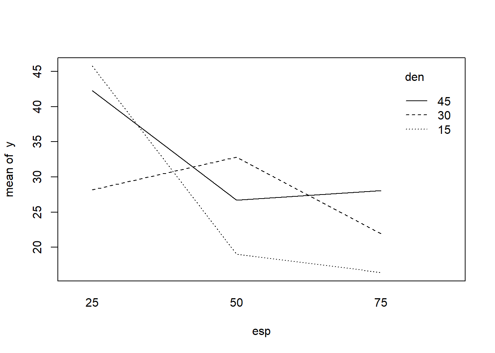
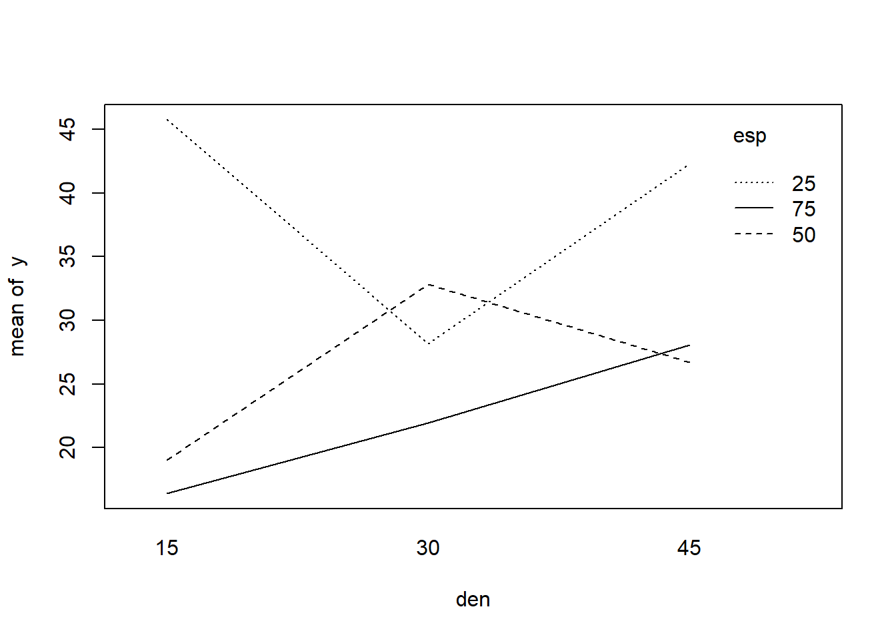

20 Estudo do Fatorial \(3^2\)
Nos experimentos fatoriais \(3^2\) ou \(3 \times 3\), temos \(2\) fatores, cada um dos quais ocorre em \(3\) níveis. Os tratamentos são formados pelas combinações dos \(3\) níveis dos \(2\) fatores, resultando em \(9\) tratamentos.
Como exemplo de um ensaio fatorial \(3^2\), vamos utilizar os dados obtidos do trabalho de graduação intitulado “Efeitos do espaçamento e da densidade de semeadura na produção de massa verde e matéria seca em diferentes épocas e, na produção de sementes da cultura Crotalaria juncea L.” realizado por LAMERS (1981). Neste trabalho, foram utilizado 3 espaçamentos entre linhas (25 cm, 50 cm e 75 cm) e 3 densidade de plantas por metro linear (15, 30 e 45 plantas por metro linear). O delineamento foi instalado em blocos casualizados com 3 repetições, e os dados obtidos para produção de massa verde (t/ha), 139 dias após a semeadura, foram os seguintes: Os dados pode ser acessados no link crotalária.txt.
| Espaçamento | Densidade | Bloco 1 | Bloco 2 | Bloco 3 | Totais |
|---|---|---|---|---|---|
| 25 | 15 | 46,82 | 30,705 | 59,77 | 137,295 |
| 25 | 30 | 31,04 | 28,41 | 25,1 | 84,55 |
| 25 | 45 | 47,325 | 50,445 | 29,01 | 126,78 |
| 50 | 15 | 26,3875 | 15,61 | 15,12 | 57,1175 |
| 50 | 30 | 32,765 | 33,615 | 32,115 | 98,495 |
| 50 | 45 | 37,455 | 21,4125 | 21,21 | 80,0775 |
| 75 | 15 | 12,6116 | 10,4015 | 26,2095 | 49,2226 |
| 75 | 30 | 23,4776 | 24,1842 | 18,1548 | 65,8166 |
| 75 | 45 | 26,3297 | 24,0652 | 33,8482 | 84,2431 |
| Totais | 284,2114 | 238,8484 | 260,5375 | 783,5973 |
Dados originais:DOWNLOAD
20.1 Obtenção da análise de variância
A análise de variância preliminar é feita de acordo com o delineamento em blocos causalizado, com 9 tratamentos e 3 blocos: \[ \begin{aligned} SQ_{Total} &= (46,8200^2+30,7050^2+\cdots +33,8482^2)-\frac{783,5973^2}{9 \cdot 3} \\ &=3544,9079 \end{aligned} \] \[ \begin{aligned} SQ_{Trat} &= \frac{1}{3} (137,2950^2+84,5500^2+\cdots +84,2431^2)-\frac{783,5973^2}{9 \cdot 3} \\ &=2358,1623 \end{aligned} \]
\[ \begin{aligned} SQ_{Blocos} &= \frac{1}{9} (284,2114^2+238,8484^2+260,5375^2)-\frac{783,5973^2}{9 \cdot 3} \\ &=114,3953 \end{aligned} \]
\[ \begin{aligned} SQ_{Res} &= SQ_{Total} - SQ_{Trat}- SQ_{Blocos} &=3544,9079-2358,1623-114,3953=1072,3503 \end{aligned} \]
Então, podemos montar o seguinte quadro de análise de variância:
| Causas de Variação | GL | SQ | QM | F |
|---|---|---|---|---|
| Trat. | 8 | 2358,1623 | 294,7703 | 4,40* |
| Blocos | 2 | 114,3953 | 57,1976 | 0,85 |
| Res | 16 | 1072,3503 | 67,0219 | |
| Total | 26 | 3544,9079 |
Conclusão: O teste é siginificativo ao nível de \(1\%\) de probabilidade, logo, rejeitamos a hipótese da nulidade (\(H_0\)), e concluímos que os efeitos dos tratamentos diferem entre sim em relação à característica analisada, com um grau de confiança superior a \(99\%\) de probabilidade.
Devemos agora, desdobrar a soma de quadrado e os graus de liberdade de tratamentos para estudar os efeitos principais e a interação entre os fatores.
Para facilitar os cálculos, utilizamos um quadro auxiliar como o seguinte:
Quadro de totais
| (3) | \(D_{15}\) | \(D_{30}\) | \(D_{45}\) | Total |
|---|---|---|---|---|
| \(E_{25}\) | 137.2950 | 84.5500 | 126.7800 | 348.6250 |
| \(E_{50}\) | 57.1175 | 98.4950 | 80.0775 | 235.6900 |
| \(E_{75}\) | 49.2226 | 65.8166 | 84.2431 | 199.2823 |
| Total | 243.6351 | 248.8616 | 291.1006 | 783.5973 |
Então, as somas de quadrados são obtidas da seguinte maneira:
1. Soma de quadrados devido ao efeito de Espaçamento:
\[ SQ_{Esp.} = \frac{1}{r_E}[T_{E25}^2+T_{E50}^2+T_{E75}^2] - \frac{G^2}{I\cdot J} \\ SQ_{Esp.}= \frac{1}{9}[348,6250^2+235,6900^2+199,2823^2] - \frac{783,5973^2}{9 \cdot 3} \\ SQ_{Esp.}= 1347,5214 \]
2. Soma de quadrados devido ao efeito de Densidade:
\[ SQ_{Dens.} = \frac{1}{r_D}[T_{D15}^2+T_{D30}^2+T_{D45}^2] - \frac{G^2}{I\cdot J} \\ SQ_{Dens.}= \frac{1}{9}[243,635^2+248,8616^2+291,1006^2] - \frac{783,5973^2}{27} \\ SQ_{Dens.}= 150,5342 \]
3. Soma de quadrados devido ao efeito da Interação Espaçamento \(\times\) Densidade:
\[ SQ_{Interação\;E\times D} = SQ_{E,D}-SQ_{E}-SQ_{D} \\ SQ_{I,D} = \frac{1}{r_{ED}}(T_{E25D15}^2+T_{E25D30}^2+\cdots +T_{E75D45}^2) - C \\ SQ_{I,D}= \frac{1}{3}(137,2950^2+84,5500^2+\cdots + 84,2431^2) - \frac{783,5973^2}{27} \\ SQ_{I,D} = 2358,1623 \\ \] assim,
\[ SQ_{Interação\;E\times D} = SQ_{E,D}-SQ_{E}-SQ_{D} \\ SQ_{Interação\;E\times D}=2358,1623-1347,5214-150,5342 \\ SQ_{Interação\;E\times D}=860,1068 \]
Portanto, temos o seguinte quadro de análise de variância:
| Causas de Variação | GL | SQ | QM | F |
|---|---|---|---|---|
| Espaçamento (E) | 2 | 1347.5214 | 673.7607 | 10.05** |
| Densidade (D) | 2 | 150.5342 | 75.2671 | 1.12 |
| Interação (ExD) | 4 | 860.1068 | 215.0267 | 3.21* |
| (Tratamentos) | 8 | 2358.1623 | – | – |
| Bloco | 2 | 114.3953 | 57.1976 | 0.85 |
| Resíduos | 16 | 1072.3503 | 67.0219 | – |
| Total | 26 | 3544.9079 | – | – |
Valores de F da tabela para Espaçamento e Densidade (\(2 \times 16 GL\)): \(\begin{cases}5\%=3,63 \\ 1\%=6,23 \end{cases}\)
Valores de F da tabela para Interação (\(4 \times 16 GL\)): \(\begin{cases}5\%=3,01 \\ 1\%=4,77 \end{cases}\)
Conclusões
Para efeito de Espaçamento: O teste foi significativo ao nível de \(1\%\) de probabilidade, indicando que devemos rejeitar \(H_0\) e concluir que existe diferença entre os espaçamentos em relação à produção de massa verde de Crotalaria juncea, com um grau de confiança superior a \(99\%\) de probabilidade.
Para efeito de Densidade: O teste não foi significativo ao nível de \(5\%\) de probabilidade, indicando que não devemos rejeitar \(H_0\) e concluir que as densidades de semeadura não possuem efeitos diferentes sobre a produção de massa verde de Crotalaria juncea.
Para efeito da Interação (E \(\times\) D): O teste foi significativo ao nível de \(5\%\) de probabilidade, indicando que devemos rejeitar \(H_0\) e concluir que os fatores espaçamento e densidade de semeadura agem conjuntamente sobre a produção de massa verde de Crotalaria juncea.
Como a interação \(E \times D\) foi significativa, devemos portanto, desdobrar os graus de liberdade da interação para estudar os efeitos de cada um dos fatores dentro dos níveis do outro fator.
20.1.1 Desdobrando a interação \(E \times D\), para estudar os efeitos do fator Espaçamento em cada nível do fator Densidade (E d. D):
\[ SQ_{Ed.D15} = \frac{1}{3}(137,2950^2+57,1175^2+49,2226^2) - \frac{243,6351^2}{9}=1583,0565 \\ SQ_{Ed.D30} = \frac{1}{3}(84,5500^2+98,4950^2+65,8166^2) - \frac{248,8616^2}{9}=179,2535 \\ SQ_{Ed.D45} = \frac{1}{3}(126,7800^2+80,0775^2+84,2431^2) - \frac{291,1006^2}{9}=455,3182 \]
Verificação: \(SQ_{Ed.D15}+SQ_{Ed.D30}+SQ_{Ed.D45}=SQ_{E}+SQ_{E\times D}\)
Então, o quadro de análise de variância com desdobramento da interação ExD, estudando-se o efeito de Espaçamento dentro de cada Densidade será o seguinte:
| Causas de Variação | GL | SQ | QM | F |
|---|---|---|---|---|
| Espaçamento d. D15 | 2 | 1583.0565 | 791.5283 | 11.81* |
| Espaçamento d. D30 | 2 | 179.2535 | 89.6267 | 1.34 |
| Espaçamento d. D45 | 2 | 445.3182 | 222.6591 | 3.32 |
| Densidades (D) | 2 | 150.5342 | 75.2671 | 1.12 |
| (Tratamentos) | 8 | 2358.1623 | – | – |
| Bloco | 2 | 114.3953 | 57.1976 | 0.85 |
| Resíduos | 16 | 1072.3503 | 67.0219 | – |
| Total | 26 | 3544.9079 | – | – |
F da tabela (\(2 \times 16 GL\)): \(\begin{cases}5\%=3,63 \\ 1\%=6,23 \end{cases}\)
Conclusões
Para Espaçamento dentro de Densidade 15: O teste F foi significativo ao nível de \(1\%\) de probabilidade, indicando que existe diferença entre os espaçamentos em relação à produção de massa verde de Crotalaria juncea, com um grau de confiança superior a \(99\%\) de probabilidade.
Para Espaçamento dentro de Densidade 30 e 45: Os valores do teste F foram não significativos, indicando que os espaçamentos não diferem entre si em relação à produção de massa verde de Crotalaria juncea.
20.1.2 Desdobrando a interação \(E\times D\), para estudar os efeitos do fator Densidade em cada nível do fator Espaçamentos (D d. E):
\[ SQ_{Dd.E25} = \frac{1}{3}(137.2950^2+84.55^2+126.78^2) - \frac{348.6250^2}{9}=519.5526 \\ SQ_{Dd.E50} = \frac{1}{3}(57.1175^2+98.4950^2+80.0775^2) - \frac{235.6900^2}{9}=286.4959 \\ SQ_{Dd.E75} = \frac{1}{3}(49.2226^2+65.8166^2+84.2431^2) - \frac{199.2823^2}{9}=204.5925 \]
Verificação: \(SQ_{Dd.E25}+SQ_{Dd.D50}+SQ_{Dd.D75}=SQ_{D}+SQ_{E\times D}\)
Então, o quadro de análise de variância com desdobramento da interação ExD, estudando-se o efeito de Densidade dentro de cada Espaçamento será o seguinte:
| Causas de Variação | GL | SQ | QM | F |
|---|---|---|---|---|
| Densidade d. E25 | 2 | 519.5526 | 259.5526 | 3.88* |
| Densidade d. E50 | 2 | 286.4959 | 143.2480 | 2.14 |
| Densidade d. E75 | 2 | 204.5925 | 102.2962 | 1.53 |
| Espaçamento (E) | 2 | 1347.5214 | 673.7607 | 10.05** |
| (Tratamentos) | 8 | 2358.1623 | – | – |
| Bloco | 2 | 114.3953 | 57.1976 | 0.85 |
| Resíduos | 16 | 1072.3503 | 67.0219 | – |
| Total | 26 | 3544.9079 | – | – |
F da tabela (\(2 \times 16 GL\)): \(\begin{cases}5\%=3,63 \\ 1\%=6,23 \end{cases}\)
Conclusões
Para Densidade dentro de Espaçamento 25: O teste F foi significativo ao nível de \(5\%\) de probabilidade, indicando que existe diferença entre densidades, dentro do espaçamento de 25 cm entre linhas, em realação à produção de massa verde de Crotalaria juncea, com um grau de confiança superior a \(95\%\) de probabilidade.
Para Densidade dentro de Espaçamento 50 e 75: Os valores do teste F foram não significativos, indicando que as densidades não diferem entre si, dentro destes espaçamentos, em relação à produção de massa verde de Crotalaria juncea.
Para completar a análise de variância, e obter conclusões mais específicas sobre o efeito dos espaçamentos em cada densidade, podemos aplicar um teste de comparação de médias.
20.2 Teste de Tukey para a comparação de médias
Construção do Quadro de Médias a partir do Quadro de totais:
Quadro auxiliar de totais:
| (3) | \(D_{15}\) | \(D_{30}\) | \(D_{45}\) | Total |
|---|---|---|---|---|
| \(E_{25}\) | 137,2950/3 | 84,5500/3 | 126,7800/3 | 348,6250/9 |
| \(E_{50}\) | 57,1175/3 | 98,4950/3 | 80,0775/3 | 235,6900/9 |
| \(E_{75}\) | 49,2226/3 | 65,8166/3 | 84,2431/3 | 199,2823/9 |
| Total | 243,6351/9 | 248,8616/9 | 291,100/9 | 783,5973/27 |
Quadro de médias:
| \(D_{15}\) | \(D_{30}\) | \(D_{45}\) | Média Espaçamento | |
|---|---|---|---|---|
| \(E_{25}\) | 45,7650 | 28,1833 | 42,2600 | 38,7361 |
| \(E_{50}\) | 19,0392 | 32,8317 | 26,6925 | 26,1878 |
| \(E_{75}\) | 16,4075 | 21,9389 | 28,0810 | 22,1425 |
| Média Densidade | 27,0706 | 27,6513 | 32,3445 | 29,0221 |
20.2.1 1. Para comparar médias de Espaçamento na Densidade 15 (E d. \(D_15\))
\[ DMS=q \cdot s(m) = q_{(3 \times 16 GL)}\cdot \sqrt{\frac{QM_{Res}}{r}}=3,65\cdot \sqrt{\frac{67,0219}{3}}=17,2520\;t/ha \]
20.2.2 2. Para comparar médias de densidades no Espaçamento 25 (D d. \(E_25\))
\[ DMS=q \cdot s(m) = q_{(3 \times 16 GL)}\cdot \sqrt{\frac{QM_{Res}}{r}}=3,65\cdot \sqrt{\frac{67,0219}{3}}=17,2520\;t/ha \]
20.2.3 Resultado do teste de Tukey
Médias seguidas pela mesma letra, minúsculas nas linhas e maiúsculas nas colunas, não diferem entre si pelo teste de Tukey ao nível de \(5\%\) de probabilidade.
| \(D_{15}\) | \(D_{30}\) | \(D_{45}\) | Média Espaçamento | |
|---|---|---|---|---|
| \(E_{25}\) | 45,7650 Aa | 28,1833 Ab | 42,2600 Aab | 38,7361 |
| \(E_{50}\) | 19,0392 Ba | 32,8317 Aa | 26,6925 Aa | 26,1878 |
| \(E_{75}\) | 16,4075 Ba | 21,9389 Aa | 28,0810 Aa | 22,1425 |
| Média Densidade | 27,0706 | 27,6513 | 32,3445 | 29,0221 |
20.2.4 Cálculo do coeficiente de variação do experimento
\[ CV=100\cdot \frac{\sqrt{QM_{res}}}{\hat{m}}=100\cdot \frac{8,19}{29,0221}=28,21\% \] ## Aplicação no R

# Carregando o pacote para análise de variância
library(ExpDes.pt)
caminho<-"https://raw.githubusercontent.com/arpanosso/ExpAgr_2020/master/dados/crotalaria.txt"
d<-read.table(caminho,h=TRUE)
esp<-factor(d$Espaçamento)
den<-factor(d$Densidade)
bloco<-factor(d$Bloco)
y<-d$y
interaction.plot(esp,den,y,mean)
interaction.plot(den,esp,y,mean)
fat2.dbc(esp,den,bloco,y,fac.names = c("Espaçamento", "Densidade"))## ------------------------------------------------------------------------
## Legenda:
## FATOR 1: Espaçamento
## FATOR 2: Densidade
## ------------------------------------------------------------------------
##
##
## Quadro da analise de variancia
## ------------------------------------------------------------------------
## GL SQ QM Fc Pr>Fc
## Bloco 2 114.4 57.20 0.8535 0.44444
## Espaçamento 2 1347.5 673.75 10.0527 0.00149
## Densidade 2 150.5 75.26 1.1230 0.34964
## Espaçamento*Densidade 4 860.1 215.02 3.2083 0.04101
## Residuo 16 1072.3 67.02
## Total 26 3544.9
## ------------------------------------------------------------------------
## CV = 28.21 %
##
## ------------------------------------------------------------------------
## Teste de normalidade dos residuos (Shapiro-Wilk)
## valor-p: 0.541538
## De acordo com o teste de Shapiro-Wilk a 5% de significancia, os residuos podem ser considerados normais.
## ------------------------------------------------------------------------
##
##
##
## Interacao significativa: desdobrando a interacao
## ------------------------------------------------------------------------
##
## Desdobrando Espaçamento dentro de cada nivel de Densidade
## ------------------------------------------------------------------------
## ------------------------------------------------------------------------
## Quadro da analise de variancia
## ------------------------------------------------------------------------
## GL SQ QM Fc Pr.Fc
## Bloco 2 114.4004 57.20020 0.8535 0.4444
## Densidade 2 150.5283 75.26417 1.123 0.3496
## Espaçamento:Densidade 15 2 1583.0186 791.50931 11.8098 0.0007
## Espaçamento:Densidade 30 2 179.2489 89.62444 1.3372 0.2904
## Espaçamento:Densidade 45 2 445.3134 222.65669 3.3222 0.0621
## Residuo 16 1072.3451 67.02157 NA
## Total 26 3544.8547 136.34057 NA
## ------------------------------------------------------------------------
##
##
##
## Espaçamento dentro do nivel 15 de Densidade
## ------------------------------------------------------------------------
## Teste de Tukey
## ------------------------------------------------------------------------
## Grupos Tratamentos Medias
## a 1 45.765
## b 2 19.03933
## b 3 16.408
## ------------------------------------------------------------------------
##
##
## Espaçamento dentro do nivel 30 de Densidade
##
## De acordo com o teste F, as medias desse fator sao estatisticamente iguais.
## ------------------------------------------------------------------------
## Niveis Medias
## 1 1 28.18333
## 2 2 32.83167
## 3 3 21.93900
## ------------------------------------------------------------------------
##
##
## Espaçamento dentro do nivel 45 de Densidade
##
## De acordo com o teste F, as medias desse fator sao estatisticamente iguais.
## ------------------------------------------------------------------------
## Niveis Medias
## 1 1 42.26000
## 2 2 26.69267
## 3 3 28.08100
## ------------------------------------------------------------------------
##
##
##
## Desdobrando Densidade dentro de cada nivel de Espaçamento
## ------------------------------------------------------------------------
## ------------------------------------------------------------------------
## Quadro da analise de variancia
## ------------------------------------------------------------------------
## GL SQ QM Fc Pr.Fc
## Bloco 2 114.4004 57.20020 0.8535 0.4444
## Espaçamento 2 1347.4923 673.74615 10.0527 0.0015
## Densidade:Espaçamento 25 2 519.5526 259.77629 3.876 0.0424
## Densidade:Espaçamento 50 2 286.4893 143.24465 2.1373 0.1504
## Densidade:Espaçamento 75 2 204.5751 102.28753 1.5262 0.2474
## Residuo 16 1072.3451 67.02157 NA
## Total 26 3544.8547 136.34057 NA
## ------------------------------------------------------------------------
##
##
##
## Densidade dentro do nivel 25 de Espaçamento
## ------------------------------------------------------------------------
## Teste de Tukey
## ------------------------------------------------------------------------
## Grupos Tratamentos Medias
## a 1 45.765
## ab 3 42.26
## b 2 28.18333
## ------------------------------------------------------------------------
##
##
## Densidade dentro do nivel 50 de Espaçamento
##
## De acordo com o teste F, as medias desse fator sao estatisticamente iguais.
## ------------------------------------------------------------------------
## Niveis Medias
## 1 1 19.03933
## 2 2 32.83167
## 3 3 26.69267
## ------------------------------------------------------------------------
##
##
## Densidade dentro do nivel 75 de Espaçamento
##
## De acordo com o teste F, as medias desse fator sao estatisticamente iguais.
## ------------------------------------------------------------------------
## Niveis Medias
## 1 1 16.408
## 2 2 21.939
## 3 3 28.081
## ------------------------------------------------------------------------